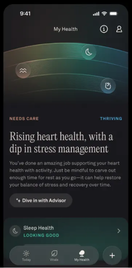
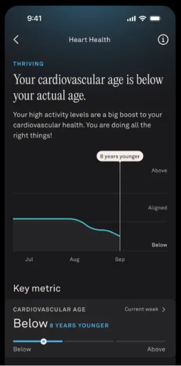
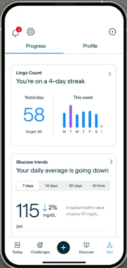

W09 · DAY 3 · 题目要求 ②
异常引导 · 三级轻量策略
L1感知：连续 3 天空腹 ≥ 6.1。只改变步步状态和首页洞察卡文案，无弹窗、无推送；手表端不显示。
L2理解：用户主动点开本页。趋势 + 参考范围 + 成因关联 + 1 个微行动。
L3行动：任一次 ≥ 7.0 或持续 7 天。明确建议就医并附预约入口，此级不可关闭，仍不用红色。
1
状态标签 + 拟人标题：「需要关照」来自光谱，不说「异常」；用步步的状态而不是红色警告。参考 Oura
2
参考范围带：用户自己看出「略高于上限」，配一句参考值说明。参考 Lingo
3
成因关联 + 依据可查：把数字连到可改变的行为；可标记「不准」反馈给 AI。
5
免责与升级条件写清楚；AI 对话入口带入本页上下文。


